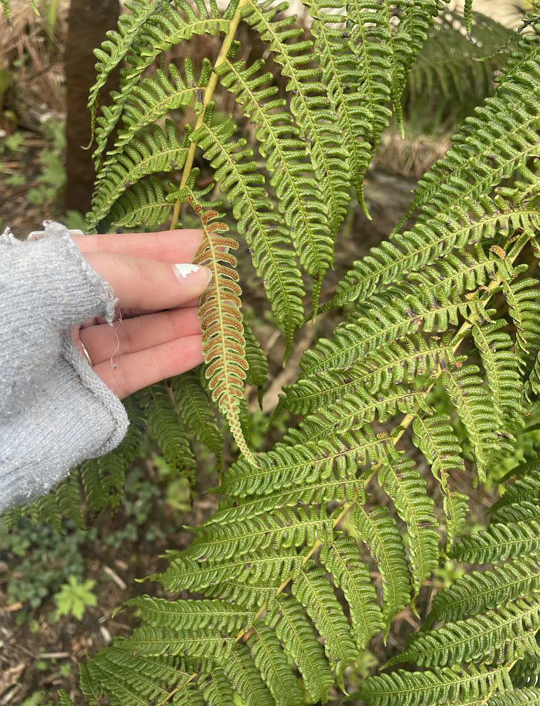

Spending time outside is a grounding practice that allows my body to feel present and one with itself. Collecting natural materials as a form of creating is a meditative practice because of the process of having to forage for all of the little trinkets that you are going to use. Afterwards when you are piecing them together, as you are grounded in being outside, you can hopefully feel so calm placing your pieces pieces. When I've made fairy houses in the past I normally would've tried to be super methodical about the placement of each piece. This time around I chose to put things places without letting my anxiety totally control me. So, instead of hyperfixating on one piece, I put the leaf down and just keep adding. In a way I'd put on my maximilism brain and just be at peace with the fact that I put a piece somewhere and move on. It put me in a sort of rythym that was super freeing. I so so recommend. For this piece in particular I sat, with friends, in a enjoyable spot in the park. We brought a picnic and blankets. It was a really cozy, making the whole things more enjoyable. Together we collected a bunch of leaves, sticks, moss, ferns, tree bark and other natural items. We then began placing them and creating what we thought of as a mini version of a toyhouse. We created the house, a hammock for our little fairy friend, some chairs, a clothes pin line and even a bed! I must admit we did use the help of a hand held hot glue gun but sometimes you just need to take help where you can get it and that's okay. Putting each part of the fairy house and expecting it to stay can be super frustrating especially when the wind comes and knocks it all over.
